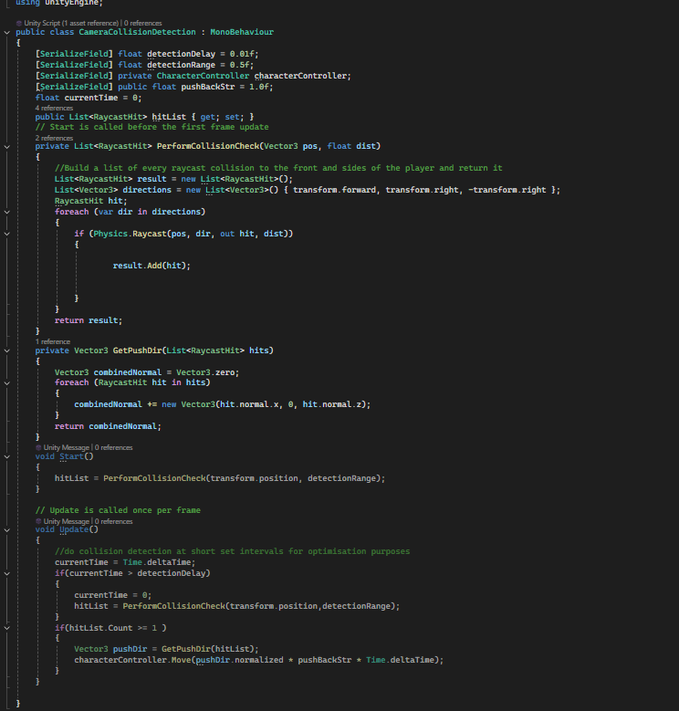
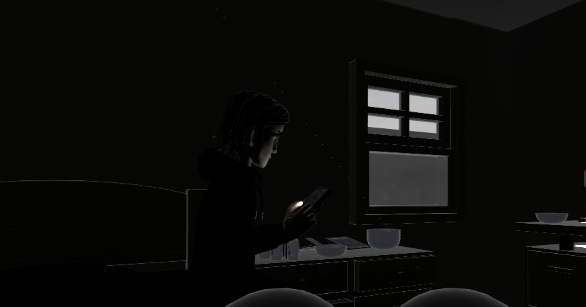

Reclaiming Dreams
I was brought in as a freelancer to aid the final development of this VR narrative experience, primarily in charge of Optimisation, Quality of Life and some small additional mechanics
Project Details / Background
I was approached to undertake some freelance work for the team behind Reclaiming Dreams, a narrative VR experience for the Meta Quest 3. The client asked for several requirements, most of which could be split between two categories: optimisation and polish.
The main priority for the client was improving user comfort as their target demographic was users who had little to no experience. Obviously, optimisation would aid with this; however, in addition, they also wanted to improve upon some mechanics that were causing issues with their users. The easiest way of solving this was to make sure the scenes were at the right scale for VR and ensuring the XR Rig was facing the scene upon loading. This would reduce motion sickness by reducing the chances of disorientation on scene load. Additionally, they also wanted to improve movement to increase user comfort by improving the movement and improving the phone silencing method to reduce user confusion.
Movement was fairly simple in theory, although due to technical issues with the version of the XR Interaction toolkit in the project, it did, unfortunately, take longer than anticipated. The concept behind the movement changes is simple: I would keep in the current smooth locomotion for more advanced users who are less likely to feel motion sickness, and then I would add in a teleportation method for more motion-sick-prone users and allow the user to switch between the two using the left controller's primary button (in this case, X). To prevent the player from looking outside the map, I created a script that checks the distance between the camera and wall; if the distance is under a threshold, the camera is pushed back an insignificant amount. This prevents the user from looking through the wall while not causing additional motion sickness, as the pushback is so insignificant it is nearly unnoticeable.

Camera detection snippet
As part of the final interactable scene before the credits, the player must snooze a phone thrice before placing it into a drawer. The original way of doing this was to drop the phone three times; this was not very intuitive, so I designed a simple change to this mechanic. To more naturally emulate a phone alarm, I added a UI Canvas that would be enabled when the alarm MP3 file played. Pressing the button on this canvas temporarily silenced the phone and incremented the event counter until the draw wherein the phone is to be placed. This simple change decreases user confusion by more naturally emulating phones, allowing the user's instincts to tell them how to proceed.
 Shader Effect GIF
Shader Effect GIF
At the end of the same scene, the client wished to replace a simple animation with a shader effect that would give the impression of burning paper but using the projects colour scheme (purple and turquoise). This was the first time I had ever created Shaders in Unity and so took longer than I would have liked. I achieved the effect by creating a dissolve shader with time based UV scrolling and a ember particle system.
The longest part of this project was optimisation. In several scenes there was stuttering for the first 3 - 5 seconds after loading into the scene. This clearly would impact user enjoyment and opinion of the project so my top priority for optimisation was investigating the cause(s). Unity profiler revealed that the vast majority of the delay was caused by Mesh Skinning, which the Quest's GPU was struggling with. At this point in the project, almost all models in the project were from an asset store. Normally this wouldnt be too bad, but the amount of detail in the textures and tri's on the models was clearly too much for a mobile VR platform, so I and the freelance artist the team hired sat down and identified the worst offenders that would require remodelling. While he worked on optimising the meshes I enabled GPU Instancing on repeated textures, converted and baked lighting to static, culled extraneous objects and did what optimisation I could to the code. All of this effort resulted in no more stutters and roughly 230% increase in average frame rate.
Image Gallery

The protaganist/
Dissolve Test
Camera detection snippet